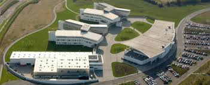

This website is all about ITB, from its inception all the way to it's transition into TU Dublin in 2019. This site wil go through what courses there are at ITB and gives facts and a timeline of its history, which will help any current students of ITB with future assignments or show potential students and buissness partners our journey and how far we've come.
